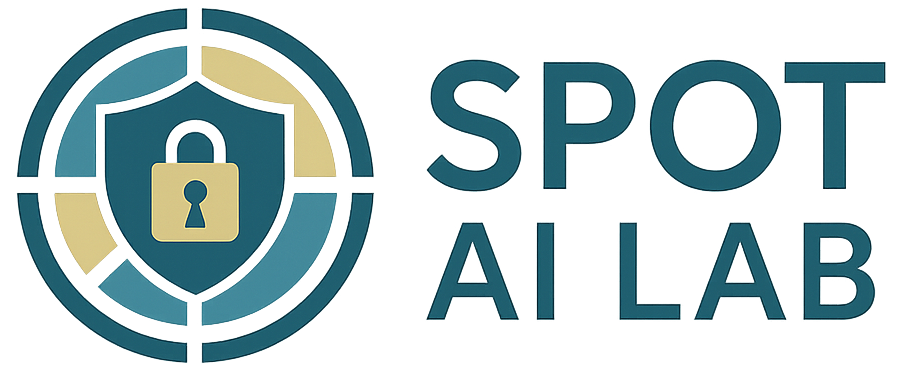

Group

The Secure, Private, Open and Trustworthy (SPOT) AI lab at MBZUAI, led by Nils Lukas. We work on secure, private, and strategic machine learning — including content watermarking, privacy-preserving inference, AI safety & security, and conversational agents with social intelligence.
We have open positions for talented students! Please apply by e-mail (my personal address or spot.ai@mbzuai.ac.ae).
Postdoctoral Researchers
Samuele Poppi
Kshitij Mishra
Dushyant Chauhan
Yuhan Liu
PhD Students
Kseniia KuvshinovaML
Fabian ZhangML
Tair DjanibekovNLP
Toluwani AremuML
Rushil TharejaNLP
MSc Students
Juan Nicolas Sepulveda AriasCV
Mohamed Mahmoud Mohamed HendyML
Majid Mohamed Mohamed Sulaiman IbrahimML
Prince JhaML
Muhammad MohideenCV
Bilal AshfaqSTATS
Alumni
Tameem BakrML
Shaikha Jasem Mohamed Ismail AlhosaniML
Maryam Abdulla Rashed Abdulla AlshamsiML
Maryam AlshehyariML
Abdalla Khalid Mohamed Abdalla AlzaabiML
Ali Al-AliML